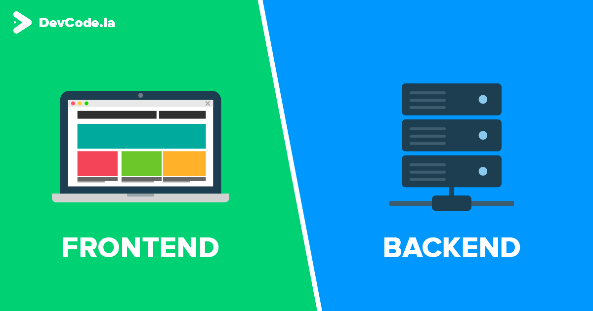
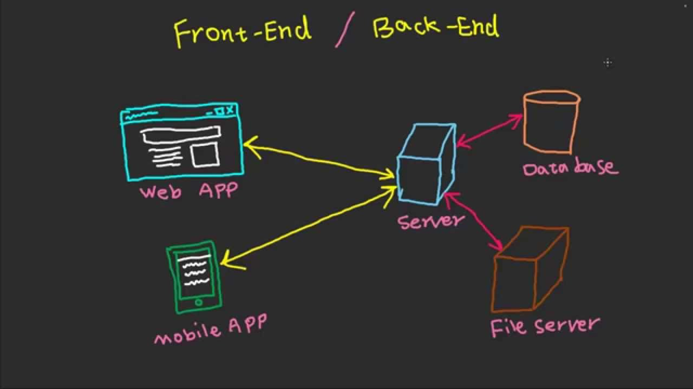
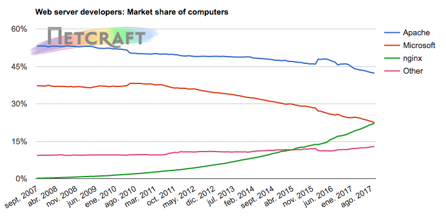

Universidad Nacional Experimental Del Táchira
Decanato De Docencia
Dpto. Ingeniería Informática
Aplicaciones web con PHP/MySQL
Programación II (Cod. 0415405T)
Temas a tratar
- El Frontend/Backend de una aplicación
- Servidor Web
- Introducción a PHP
- Aplicaciones web con PHP
- Introducción a base de datos con MySQL
Conocimientos previos
- Conceptos básicos programación básica
- Conocimientos básicos del funcionamiento de Internet
- Manejo de archivos
- Comprender la arquitectura cliente-servidor.
Objetivo de la clase
- Conocer como funciona una aplicación web.
- Desarrollo de páginas dinámicas con PHP
- Almacenamiento persistente de datos en base de datos
- Implementar una aplicación web
¡Comencemos!
Introducción
- ¿Como está desarrollada una aplicación web?
- ¿Donde se encuentran alojadas?
- ¿Donde se guarda la información?
Frontend y Backend
Son los términos utilizados para identificar la capa de presentación de la capa de acceso a datos respectivamente.
El Frontend es la capa que interactúa con el usuario. Recibe las acciones del mismo y las envía al Backend. Éste interpreta las acciones realizadas, aplica la lógica del negocio, accede y procesa los datos para entregarlos de nuevo al Frontend.
Frontend y Backend
Podemos decir que el frontend es lo que corre en el navegador y el backend en los servidores.
El servidor web
Servidor web
Es un programa que procesa una aplicación para producir contenido estático (HTML, CSS, imágenes, archivos, entre otros) y entregarlo mediante el protocolo HTTP.
Servidor web
El servidor web se ubica en el backend, se comunica con otros servidores donde cada uno puede estar o no en su propio hardware.
Servidores de Google

Fuente: Google Centro de datos
Servidor Web
Principales implementaciones
- Apache (Apache Foundation)
- IIS (Microsoft)
- nginx (Nginx, Inc.)
- Lighttpd
Cuota de mercado actual
Fuente: Netcraft
PHP
PHP

- Creado en 1995 por Rasmus Lerdorf bajo el nombre Personal Home Pages.
- Andi Gutmans y Zeev Suraski rescribieron el analizador para crear PHP 3. (PHP: Hipertext Preprocessor)
- Es el lenguaje mas utilizado en el desarrollo web.
PHP
- Posee una sintaxis y nombres de funciones similar a la de C.
- Su parte de programación orientada a objetos está basada en Java.
- Es un lenguaje no tipado, muy flexible, fácil de aprender, con mucha documentación en línea.
PHP
Ventajas
- Pequeña curva de aprendizaje.
- Gran cantidad de: documentación, expertos, librerías, frameworks.
- Es multiplataforma.
- Flexible
Desventajas
- No está diseñado para alto rendimiento.
- Mezcla de POO e imperativa.
- Gran cantidad de desarrolladores de PHP (menos remuneración)
- Flexible

¿Por qué el odio a PHP?
PHP
Principales características (1/2)
- Todo código va entre
<?php ?> -
Las variables comienzan con $
$miVariable = 'HOLA UNET' -
Las concatenación es con . (punto)
y el acceso a atributos con ->
$miObjeto->atributo = 'Sr(a) ' . $nombre
PHP
Principales características (2/2)
-
Los arreglos pueden poseer indices númericos o cadenas de texto.
$arreglo = ['a'=>1, 'b'=>2, 'c'=> 3]; echo $arreglo['a']; // Imprime 1 - Generalmente existe una función para todo.
- Constantes máginas como: __LINE__, __FILE__, __DIR__, __FUNCTION__, __CLASS__, __METHOD__, __NAMESPACE__.
¿Quiénes usan PHP?
- Facebook (usan Hack)
- Wikipedia
- Yahoo
- WordPress
- Tumblr
- Mailchimp
- UNET